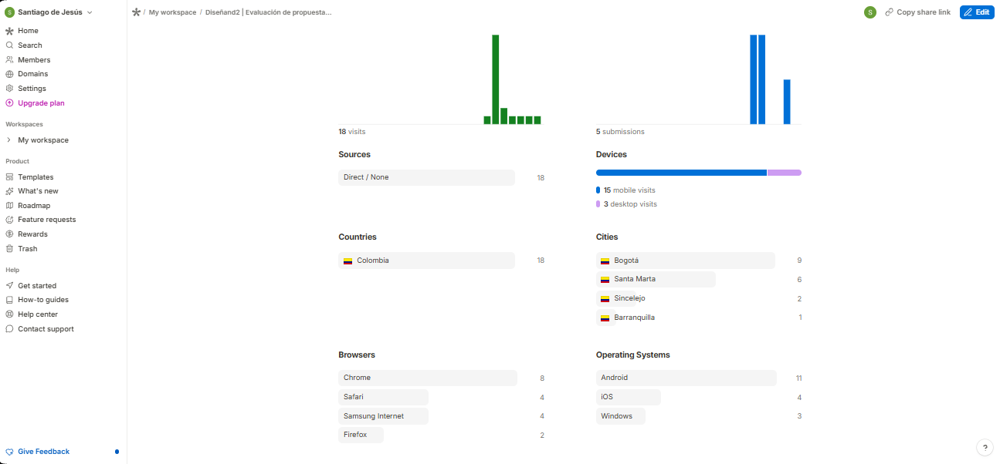

Tercer corte
Proceso de
Proceso de
Cocreación
Introducción
La cocreación fue el espacio donde las ideas comenzaron a tomar nuevas formas a través de diferentes miradas, opiniones y perspectivas. En este proceso, compartimos nuestras propuestas, escuchamos otras voces y descubrimos posibilidades que quizás no habíamos considerado. Cada conversación aportó algo distinto, permitiéndonos cuestionar, imaginar y enriquecer lo que teníamos en mente. Más que buscar una única respuesta, quisimos abrir la puerta a nuevas ideas y construir, entre todos, una experiencia capaz de despertar curiosidad, conectar con las personas y dejar huella.
Registro de actividades
Bloque- 16 nov 2026
Encuestas
[Descripción del registro]
- 17 nov 2026
Entrevistas
[Descripción del registro]
Conclusiones de las entrevistas
Conclusiones de Santiago San Juan
La entrevista con Juan Domingo permitió identificar nuevas oportunidades para fortalecer la propuesta del stand itinerante, aportando una perspectiva externa que enriqueció tanto su concepto como su desarrollo formal y funcional. Entre sus observaciones, destacó especialmente la propuesta inspirada en un mouse gigante, reconociendo su capacidad para representar de manera cercana, universal y creativa la esencia del Diseño Digital. Asimismo, sus comentarios permitieron reconocer elementos con gran potencial, como la experiencia inmersiva, las proyecciones interactivas y la conexión simbólica con una fuente de energía, al tiempo que señaló aspectos que merecen replantearse para lograr una mayor coherencia visual y espacial. Sus sugerencias sobre la interactividad, la iluminación, la distribución y los elementos estructurales abren nuevas posibilidades para seguir experimentando y perfeccionando el diseño. En definitiva, este encuentro no solo permitió conocer cuál propuesta despertó mayor interés, sino que nos brindó ideas valiosas para imaginar una experiencia más atractiva, dinámica y memorable, reafirmando la importancia de escuchar otras perspectivas para transformar buenas ideas en propuestas cada vez más completas.

Conclusiones de Valentina Martínez
La entrevista con Valentina Martínez permitió conocer una perspectiva externa que aporta nuevas ideas para seguir enriqueciendo el desarrollo de la instalación. Sus observaciones destacan la importancia de construir una propuesta visualmente atractiva, pero también clara y coherente, en la que cada elemento contribuya a comunicar su propósito. Asimismo, sus aportes permiten reconocer que el valor de la experiencia no debe quedarse únicamente en su apariencia, sino en lo que ofrece a quienes la visitan: un espacio donde puedan explorar, experimentar y descubrir de manera práctica las posibilidades del Diseño Digital. De esta manera, sus comentarios invitan a fortalecer el carácter participativo de la instalación, aprovechando recursos como las estaciones digitales, las proyecciones y las muestras de trabajos estudiantiles para transformar la curiosidad inicial en una experiencia cercana, dinámica y significativa para los futuros estudiantes.
Conclusiones de Juan Esteban

Conclusión de entrevista 1
Alberto
La entrevista con Alberto permitió reconocer el potencial de una propuesta que sorprenda y despierte curiosidad desde el primer momento. Su preferencia por la segunda versión demuestra el interés que puede generar su carácter diferente y llamativo, especialmente entre los estudiantes que están próximos a elegir una carrera. Sin embargo, también señaló algunos aspectos que necesitan mayor atención, como la claridad de la entrada, la apariencia de la estructura exterior y la organización del recorrido. Estos elementos son importantes para que los visitantes comprendan cómo ingresar, puedan orientarse y sepan qué encontrarán dentro de la instalación. Sus observaciones invitan a fortalecer tanto la primera impresión como el desarrollo de la experiencia, procurando que la propuesta no solo atraiga las miradas, sino que también mantenga el interés de quienes decidan acercarse y participar.
Conclusión de entrevista 2
Deluque
La entrevista con Deluque permitió identificar la importancia de que la instalación no solo resulte llamativa, sino que también comunique su propósito de manera clara. Su valoración de la segunda propuesta destaca su carácter disruptivo y su capacidad para generar una impresión en quienes la observan. A partir de sus comentarios, surge la posibilidad de reforzar la apariencia exterior mediante elementos que permitan relacionar más fácilmente su forma con el Diseño Digital. En este sentido, su sugerencia de explorar recursos reconocibles, como un USB o un mouse, abre nuevas alternativas para enriquecer su identidad visual. También señaló la importancia de revisar aquellos elementos que puedan generar confusión y de explicar mejor qué encontrarán los visitantes en el interior. Sus aportes invitan a conseguir un equilibrio entre una apariencia que despierte curiosidad y una experiencia interior que resulte comprensible, atractiva y fácil de recorrer.
Proceso de encuestas
BloqueLos comentarios recogidos durante la evaluación permitieron identificar un interés especial por la tercera propuesta, principalmente por su representación mediante un mouse de gran escala. Su forma fue uno de los aspectos más destacados, al percibirse como un elemento llamativo, novedoso y de fácil reconocimiento. Asimismo, su carácter interactivo despertó curiosidad por conocer cómo funcionaría la experiencia y qué ofrecería a los visitantes.
A partir de las observaciones, surgieron varias oportunidades de mejora que involucran tanto las propuestas anteriores como la tercera versión. Se sugirió recuperar la idea de incorporar una entrada con proyección holográfica, presente en la segunda versión, para generar una primera impresión más atractiva, así como diferenciar claramente una puerta de acceso y otra de salida, tal como se planteaba en las versiones anteriores. También se señaló la importancia de revisar la presentación formal del lápiz en las propuestas donde aparece, para evitar posibles interpretaciones equivocadas, y mejorar la distribución y organización de los elementos. Finalmente, se identificó la necesidad de fortalecer el aspecto visual y conceptual del módulo al que se conecta simbólicamente el mouse, de manera que se entienda con mayor claridad su función como fuente de energía, tomacorriente o punto de conexión que activa la instalación.
En general, la evaluación destaca el potencial de la tercera propuesta como concepto central para el desarrollo de la instalación. Las sugerencias recibidas permiten orientar los siguientes ajustes hacia una propuesta más coherente en su lenguaje visual, mejor organizada en su distribución espacial y con una experiencia interactiva que despierte la curiosidad de los visitantes.

Resultados
BloqueEn conjunto, la entrevista y la encuesta coinciden en el interés por la tercera propuesta, el mouse de gran escala, valorada por su forma llamativa, reconocible e interactiva, y dejan como mejoras la entrada, la diferenciación entre acceso y salida, la presentación del lápiz, la distribución de los elementos y la claridad del módulo de conexión, de modo que esta propuesta se perfila como el concepto central para continuar el desarrollo de la instalación.